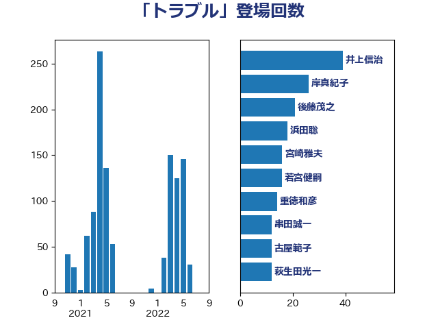

単語「トラブル」

| 井上信治 | 自由民主党 | 39 回 |
| 岸真紀子 | 立憲民主党 | 26 回 |
| 後藤茂之 | 自由民主党 | 21 回 |
| 浜田聡 | NHK党 | 18 回 |
| 宮崎雅夫 | 自由民主党 | 16 回 |
| 若宮健嗣 | 自由民主党 | 16 回 |
| 重徳和彦 | 立憲民主党 | 14 回 |
| 串田誠一 | 日本維新の会 | 12 回 |
| 古屋範子 | 公明党 | 12 回 |
| 萩生田光一 | 自由民主党 | 12 回 |
| 田嶋要 | 立憲民主党 | 11 回 |
| 伊佐進一 | 公明党 | 10 回 |
| 安江伸夫 | 公明党 | 10 回 |
| 森田俊和 | 立憲民主党 | 10 回 |
| 音喜多駿 | 日本維新の会 | 10 回 |
| 伊藤孝恵 | 国民民主党 | 9 回 |
| 小泉進次郎 | 自由民主党 | 9 回 |
| 山添拓 | 日本共産党 | 9 回 |
| 徳永エリ | 立憲民主党 | 9 回 |
| 泉田裕彦 | 自由民主党 | 9 回 |
| 大野泰正 | 自由民主党 | 8 回 |
| 赤羽一嘉 | 公明党 | 8 回 |
| 室井邦彦 | 日本維新の会 | 7 回 |
| 末松信介 | 自由民主党 | 7 回 |
| 田村智子 | 日本共産党 | 7 回 |
| 田村貴昭 | 日本共産党 | 7 回 |
| 西村康稔 | 自由民主党 | 7 回 |
| 井原巧 | 自由民主党 | 6 回 |
| 平沼正二郎 | 自由民主党 | 6 回 |
| 斎藤アレックス | 国民民主党 | 6 回 |
| 福島伸享 | 無所属 | 6 回 |
| 中島克仁 | 立憲民主党 | 5 回 |
| 伊藤岳 | 日本共産党 | 5 回 |
| 吉田統彦 | 立憲民主党 | 5 回 |
| 小沼巧 | 立憲民主党 | 5 回 |
| 松沢成文 | 日本維新の会 | 5 回 |
| 柳ヶ瀬裕文 | 日本維新の会 | 5 回 |
| 浜口誠 | 国民民主党 | 5 回 |
| 田中健 | 国民民主党 | 5 回 |
| 阿達雅志 | 自由民主党 | 5 回 |
| 高橋千鶴子 | 日本共産党 | 5 回 |
| 吉良よし子 | 日本共産党 | 4 回 |
| 岡本三成 | 公明党 | 4 回 |
| 川合孝典 | 国民民主党 | 4 回 |
| 川田龍平 | 立憲民主党 | 4 回 |
| 武村展英 | 自由民主党 | 4 回 |
| 熊谷裕人 | 立憲民主党 | 4 回 |
| 熊野正士 | 公明党 | 4 回 |
| 片山大介 | 日本維新の会 | 4 回 |
| 牧山ひろえ | 立憲民主党 | 4 回 |
| 田村まみ | 国民民主党 | 4 回 |
| 赤木正幸 | 日本維新の会 | 4 回 |
| 長浜博行 | 無所属 | 4 回 |
| 鰐淵洋子 | 公明党 | 4 回 |
| 三谷英弘 | 自由民主党 | 3 回 |
| 中野洋昌 | 公明党 | 3 回 |
| 倉林明子 | 日本共産党 | 3 回 |
| 古川禎久 | 自由民主党 | 3 回 |
| 大西健介 | 立憲民主党 | 3 回 |
| 斉藤鉄夫 | 公明党 | 3 回 |
| 柚木道義 | 立憲民主党 | 3 回 |
| 牧原秀樹 | 自由民主党 | 3 回 |
| 石井苗子 | 日本維新の会 | 3 回 |
| 石川博崇 | 公明党 | 3 回 |
| 礒崎哲史 | 国民民主党 | 3 回 |
| 福島みずほ | 社会民主党 | 3 回 |
| 菅義偉 | 自由民主党 | 3 回 |
| 豊田俊郎 | 自由民主党 | 3 回 |
| 赤嶺政賢 | 日本共産党 | 3 回 |
| 逢坂誠二 | 立憲民主党 | 3 回 |
| 鈴木義弘 | 国民民主党 | 3 回 |
| 青木愛 | 立憲民主党 | 3 回 |
| 上川陽子 | 自由民主党 | 2 回 |
| 井野俊郎 | 自由民主党 | 2 回 |
| 仁木博文 | 無所属 | 2 回 |
| 勝俣孝明 | 自由民主党 | 2 回 |
| 勝部賢志 | 立憲民主党 | 2 回 |
| 古川元久 | 国民民主党 | 2 回 |
| 吉田久美子 | 公明党 | 2 回 |
| 国光あやの | 自由民主党 | 2 回 |
| 國重徹 | 公明党 | 2 回 |
| 城井崇 | 立憲民主党 | 2 回 |
| 塩川鉄也 | 日本共産党 | 2 回 |
| 奥下剛光 | 日本維新の会 | 2 回 |
| 安達澄 | 無所属 | 2 回 |
| 宮本徹 | 日本共産党 | 2 回 |
| 山口壯 | 自由民主党 | 2 回 |
| 山本博司 | 公明党 | 2 回 |
| 山際大志郎 | 自由民主党 | 2 回 |
| 平山佐知子 | 無所属 | 2 回 |
| 平木大作 | 公明党 | 2 回 |
| 打越さく良 | 立憲民主党 | 2 回 |
| 新垣邦男 | 立憲民主党 | 2 回 |
| 本村伸子 | 日本共産党 | 2 回 |
| 本田顕子 | 自由民主党 | 2 回 |
| 梅村みずほ | 日本維新の会 | 2 回 |
| 梅村聡 | 日本維新の会 | 2 回 |
| 森屋隆 | 立憲民主党 | 2 回 |
| 清水貴之 | 日本維新の会 | 2 回 |
| 湯原俊二 | 立憲民主党 | 2 回 |
| 田村憲久 | 自由民主党 | 2 回 |
| 福山哲郎 | 立憲民主党 | 2 回 |
| 笠井亮 | 日本共産党 | 2 回 |
| 藤原崇 | 自由民主党 | 2 回 |
| 西田昭二 | 自由民主党 | 2 回 |
| 辻元清美 | 立憲民主党 | 2 回 |
| 酒井庸行 | 自由民主党 | 2 回 |
| 里見隆治 | 公明党 | 2 回 |
| 金子恭之 | 自由民主党 | 2 回 |
| 鈴木俊一 | 自由民主党 | 2 回 |
| 高良鉄美 | 無所属 | 2 回 |
| ながえ孝子 | 無所属 | 1 回 |
| 上杉謙太郎 | 自由民主党 | 1 回 |
| 上田清司 | 国民民主党 | 1 回 |
| 中野英幸 | 自由民主党 | 1 回 |
| 伊藤孝江 | 公明党 | 1 回 |
| 佐々木さやか | 公明党 | 1 回 |
| 北村経夫 | 自由民主党 | 1 回 |
| 古賀篤 | 自由民主党 | 1 回 |
| 吉川赳 | 無所属 | 1 回 |
| 吉田はるみ | 立憲民主党 | 1 回 |
| 和田政宗 | 自由民主党 | 1 回 |
| 和田有一朗 | 日本維新の会 | 1 回 |
| 国定勇人 | 自由民主党 | 1 回 |
| 坂本祐之輔 | 立憲民主党 | 1 回 |
| 堀場幸子 | 日本維新の会 | 1 回 |
| 堂故茂 | 自由民主党 | 1 回 |
| 塩田博昭 | 公明党 | 1 回 |
| 大岡敏孝 | 自由民主党 | 1 回 |
| 大島敦 | 立憲民主党 | 1 回 |
| 宮崎政久 | 自由民主党 | 1 回 |
| 宮本岳志 | 日本共産党 | 1 回 |
| 宮路拓馬 | 自由民主党 | 1 回 |
| 小宮山泰子 | 立憲民主党 | 1 回 |
| 山下貴司 | 自由民主党 | 1 回 |
| 山崎正恭 | 公明党 | 1 回 |
| 山本香苗 | 公明党 | 1 回 |
| 山田勝彦 | 立憲民主党 | 1 回 |
| 山谷えり子 | 自由民主党 | 1 回 |
| 岡本あき子 | 立憲民主党 | 1 回 |
| 岩渕友 | 日本共産党 | 1 回 |
| 岸信夫 | 自由民主党 | 1 回 |
| 岸田文雄 | 自由民主党 | 1 回 |
| 川崎ひでと | 自由民主党 | 1 回 |
| 杉久武 | 公明党 | 1 回 |
| 杉尾秀哉 | 立憲民主党 | 1 回 |
| 東徹 | 日本維新の会 | 1 回 |
| 松下新平 | 自由民主党 | 1 回 |
| 松島みどり | 自由民主党 | 1 回 |
| 松本尚 | 自由民主党 | 1 回 |
| 林芳正 | 自由民主党 | 1 回 |
| 枝野幸男 | 立憲民主党 | 1 回 |
| 柴田巧 | 日本維新の会 | 1 回 |
| 梶山弘志 | 自由民主党 | 1 回 |
| 森山浩行 | 立憲民主党 | 1 回 |
| 森本真治 | 立憲民主党 | 1 回 |
| 池下卓 | 日本維新の会 | 1 回 |
| 浮島智子 | 公明党 | 1 回 |
| 渡辺猛之 | 自由民主党 | 1 回 |
| 源馬謙太郎 | 立憲民主党 | 1 回 |
| 滝沢求 | 自由民主党 | 1 回 |
| 畦元将吾 | 自由民主党 | 1 回 |
| 矢倉克夫 | 公明党 | 1 回 |
| 石井啓一 | 公明党 | 1 回 |
| 石井章 | 日本維新の会 | 1 回 |
| 神谷裕 | 立憲民主党 | 1 回 |
| 福重隆浩 | 公明党 | 1 回 |
| 笠浩史 | 無所属 | 1 回 |
| 笹川博義 | 自由民主党 | 1 回 |
| 篠原豪 | 立憲民主党 | 1 回 |
| 舟山康江 | 国民民主党 | 1 回 |
| 芳賀道也 | 国民民主党 | 1 回 |
| 藤井比早之 | 自由民主党 | 1 回 |
| 藤巻健太 | 日本維新の会 | 1 回 |
| 西田実仁 | 公明党 | 1 回 |
| 赤澤亮正 | 自由民主党 | 1 回 |
| 野田国義 | 立憲民主党 | 1 回 |
| 野田聖子 | 自由民主党 | 1 回 |
| 鈴木庸介 | 立憲民主党 | 1 回 |
| 鎌田さゆり | 立憲民主党 | 1 回 |
| 階猛 | 立憲民主党 | 1 回 |
| 高木かおり | 日本維新の会 | 1 回 |
| 高木宏壽 | 自由民主党 | 1 回 |
| 高橋克法 | 自由民主党 | 1 回 |
| 高見康裕 | 自由民主党 | 1 回 |